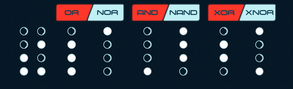
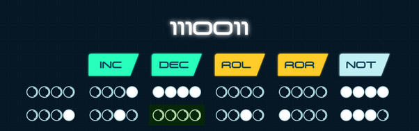
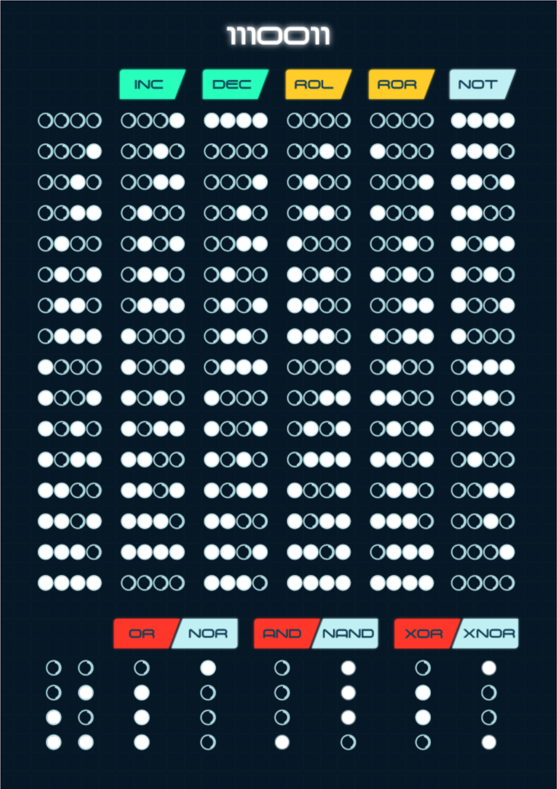

Frequently Asked Questions#
How many cards does MOON have?#
MOON has 108 cards (68x68mm):
24 bit cards: 4 x 4 (16) for 4-bit, and 2 x 4 (8) extra for 5 and 6-bit.
10 cpu cards: A, B, C, D, 1, 2, 4, 8, 16, 32.
16 goal cards: 0000 to 1111.
14 operation cards: INC. DEC, ROLE, ROR, MOV, NOT, OR, AND, XOR, NOR, NAND, XNOR, ADD, SUB.
17 event cards: ERROR B, C, D, RESET A, B, C, D, ERROR ROL, NOT, XOR, 4 OK, RESET 2, 4, 8.
2 BUG cards.
20 RAM cards: 4 x 4 bits + 4 colored RAM cards.
5 slot cards: 1, 2, 3, 4 + lunar module.
What sleeves should I use for the cards?#
You can use the 70x70mm sleeves from Mayday Games or Zacatrus.
When do I get my energy back? When does a round end?#
In individual/cooperative mode, energy is recovered each time a card is drawn from the goal deck of cards and placed face down in a free slot.
If you still have goal cards to resolve and you have energy left, you can continue to perform operations to resolve them.
For example, let’s imagine that you draw the goal 0110 at the beginning of the game and place it in Slot 1. You perform a few operations but you run out of energy without solving it. At that point, you move the 0110 card to Slot 2 and place a new target card face down in Slot 1. Since you have drawn a card from the goal deck of cards, you regain your energy and try to solve the 0110 card. If you manage to solve it and still have energy left, you can flip the target in Slot 1 and try to solve it in the same round.
In competitive mode, when you can’t do anything else with your remaining energy, you hand over the turn to the next player and recover your energy for the next round.
Can I use the same operation card several times in the same round?#
Yes, as long as you have energy left, you can carry out the operations you want in the order you want paying their cost of energy.
In two-register operations, does one of the registers always have to be Register A?#
No, you can use any register for two-register operations (MOV, OR, AND, XOR, NOR, NAND, XNOR, ADD, SUB).
How do you add event cards to the goal deck?#
When you choose to add event cards to the goal deck, you should do it after register initialization (you draw 3 goal cards and then copy them in registers B, C and D). Then you add the event cards to the goal card deck and shuffle it. The deck will be larger, but since events are resolved immediately, games with events do not take a significantly larger amount of time.
What are slot cards for?#
The slot cards are not really necessary to play, but they are useful to know how many free slots you have to draw goal cards (when you have the 5 occupied, you will not be able to draw more). You can play more difficult games with fewer free slots from the beginning.
Why do 1, 2, 4, 8, 16 and 32 cards have other values on the other side?#
These cards indicate the columns inside the CPU. They have different numbers on both sides to prevent problems if any of them are lost. In addition, we have included the values 64 and 128 in the back of 1 and 2 cards in case someone is encouraged to play 7 and 8-bit games, a challenge for real hackers!
Does the Reset event card take place on registers which have an error at the time of the draw of the Reset event?#
Yes, reset cards take place on registers that have errors, both Reset register cards (e.g., Reset B) and Reset column cards (e.g., Reset 4).
Does a Bug card error the corresponding register as well as block the slot or can you still modify a bugged register?#
Bug cards break slots, not registers. Error cards break registers, not slots.
There are no slots corresponding registers. Slots in the pending goals queue and registers are not related at all. You can place your slot cards wherever you want in any layout, e.g. from left to right on top of the 1, 2, 4, 8 cards.
Why some cards are red on the other side?#
There are cards that can be “broken” like registers when ERROR cards are drawn or slots when BUG cards are drawn. We can indicate this by flipping the card so that they are red.
Why is register A yellow on the other side?#
The register A is the most important because it is where we will solve goals so we can indicate it in a special way by turning that card to make it yellow. Also, since this record cannot be broken (there is no ERROR A card), it makes no sense for its back to be red.
Why is there no ERROR A event card?#
If there was ERROR A, we would lose the game because we couldn’t solve the current goal. Remember that goals are considered solved only when their value is stored in register A.
How do RESET 2, 4, 8 events work?#
RESET 2 turns off all the bits located in column 2 of the CPU (in all registers: A, B, C, D). RESET 4 does the same with the bits in column 4 in all registers. RESET 8 does the same with the bits of column 8 in all registers.
Note
These cards are not explained in the rule book because they were added as extra content in the Kickstarter campaign.
Why is there no RESET 1 event card?#
Column 1 can easily be changed using INC and DEC and so it wouldn’t affect the game much that event.
Can I solve more than one goal in my turn when playing in competitive mode?#
Yes! As long as you still have enough energy to perform the needed operations, you can solve several goals in your turn.
How do you play with events and +4-bit register? What happens when an event card comes out in the middle of the composition of a 2-card goal?#
If you want to play with events with +4 bit registers, you have to wait until you have two goal cards to conform the goal that you will have to solve in register A.
If you have a goal card and when you reveal the other one you get:
An event, the event is resolved and you discard the event card.
A BUG card, that slot becomes broken and you will have to move your goal card to the next slot.
Since you still need another goal card to make up the +4-bit goal, you must draw a new card from the goal deck of cards. If it were an event again, the above would be repeated (solve the event and discard) until you finally get to have 2 goal cards in the current slot.
How do operations NOR, NAND and XNOR work?#
Important
NOR, NAND and XNOR are ADVANCED operations and should be used only when you master the game mechanics.
These three negated operations do the opposite of OR, AND and XOR respectively. In the help sheet we can see that every time an OR. AND or XOR results in a bit switched off, their respective negated operation results in a bit switched on and vice versa:
Doing a NOR is equivalent to doing an OR and then a NOT on the registry where the final result is saved. The same thing happens with NAND (AND and then NOT) and XNOR (XOR and then NOT).
Note
These cards are not explained in the rule book because they were added as extra content in the Kickstarter campaign.
How do ADD and SUB operations work?#
Important
ADD and SUB are ADVANCED operations and should be used only when you master the game mechanics.
ADD adds two registers and leaves the result of the sum in the first register. For example, if we do ADD A B, we will be adding A + B and saving the sum result in A:
Initial situation:
A: 0100 (4 in decimal)
B: 0110 (6 in decimal)
After doing ADD A B:
A: 1010 (10 in decimal, 4+6 result)
B: 0110 (6 in decimal, does not change)
If the result of the sum does not fit in the register, only the bits that fit are put in the first register. For example:
Initial situation:
A: 1100 (12 in decimal)
B: 0110 (6 in decimal)
After doing ADD A B:
A: 10010 (18 in decimal, 12+6), but if we play with 4 bits per register the result doesn’t fit, so it would be A: 0010
B: 0110 (6 in decimal, does not change)
SUB is very similar to ADD but what it does is subtract two registers and leave the result of the subtraction in the first register. For example:
Initial situation:
A: 0110 (6 in decimal)
B: 0100 (4 in decimal)
After doing SUB A B:
A: 0010 (2 in decimal, result of 6-4)
B: 0100 (4 in decimal, does not change)
If the result of the subtraction is less than 0, the register is turned over just as it happens when we use DEC to decrement a register with the value of 0000. For example:
Initial situation:
A: 0100 (4 in decimal)
B: 0110 (6 in decimal)
After doing SUB A B:
A: 1110 (-2 in decimal, result 4-6). If DEC 0000 is 1111 (that is, -1), 1110 is -2.
B: 0110 (6 in decimal, does not change)
Note
These cards are not explained in the rule book because they were added as extra content in the Kickstarter campaign.
Is it true there is a typo on the help sheet?#
Yes! And thinking about that mistake on every copy of the help sheet makes me crazy!!! :(
The error is in the second line, in the DEC column. When we decrease 0001 the result is 0000, not 1000 as it appears in the help sheet:
Tip
You can switch off the incorrect bit using a marker O:)
Here you have the help sheet without typos:
